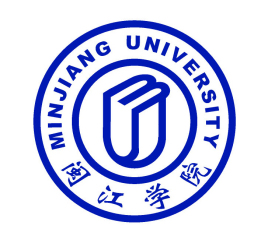

闽江学院 |
|
|
 简介闽江学院（Minjiang University），简称“闽院（MJU）”，坐落于福建省福州市。学校是由福建省人民政府举办的一所公办高等院校、福建省重点建设高校、 “服务国家特殊需求”专业硕士学位研究生教育试点高校、福建省一流学科建设高校、福建省“首批深化创新创业教育改革示范高校”、入选国家“双万计划”。 学校前身是创办于1958年的福州师范高等专科学校和创办于1984年的闽江职业大学。2018年1月，学校新增为“福建省2018-2020年硕士学位授予立项建设名单”。 截至2019年9月，学校共有4个校区，校园总面积2245多亩，校舍建筑总面积54.16万平方米，各类纸质图书189.04万册，电子图书140.17万册；设有15个学院（系）， 拥有服务国家特需项目专业硕士项目授权点1个，开设本科专业61个；有专任教师1000多人，全日制在校生1.65万人 。 |
| 版权所有@WWJ62 | |